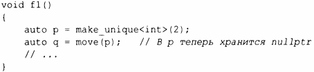

⇐13.2.1 unique_ptr и shared_ptr 13.3 Проверка выхода за границы диапазона: gsl::span⇒
Выбор между перемещением и копированием в основном выполняется неявно (§3.6). Компилятор предпочитает перемещение, когда объект должен быть уничтожен (как в случае возврата из функции с помощью return), потому что предполагается, что это более простая и эффективная операция. Однако иногда нам приходится указывать свой выбор явно. Например, unique_ptr является единственным владельцем объекта. Следовательно, его нельзя скопировать:
Если вы все равно хотите использовать unique_ptr, вы должны его перемещать. Например:
Вообще-то, std::move() ничего не перемещает. Вместо этого данная функция переводит свой аргумент в ссылку на r-значение, тем самым говоря, что его аргумент больше не будет использоваться и, следовательно, может быть перемещен (§5.2.2). Эта возможность должна была быть названа както вроде rvalue cast. Как и другие приведения, оно подвержено ошибкам и его лучше избегать. Оно существует только для обслуживания нескольких важных случаев. Рассмотрим простой обмен:
Мы не хотим постоянно копировать потенциально большие объекты и потому запрашиваем перемещение с помощью std::move() .
Как и в случае других приведений, имеются заманчивые, но опасные применения std::move() . Рассмотрим следующий фрагмент кода:
Здесь sl копируется (функцией push_back ()),в то время как s2 перемещается. Это иногда (только иногда) делает push_back () для s2 более дешевым. Проблема в том, что при этом остается объект, из которого выполнено перемещение. Если мы вновь воспользуемся s2, то получим проблемы:
Я считаю, что широкое использование std::move() слишком чревато ошибками. Не используйте его, если не можете продемонстрировать существенное и необходимое улучшение производительности. При дальнейшей технической поддержке и внесении обновлений в код перемещенный объект может быть случайно использован.
Состояние удаленного объекта в общем случае не определено, но все типы стандартной библиотеки оставляют перемещенный объект в состоянии, в котором он может быть уничтожен и присвоен. Было бы неразумно не следовать этому примеру. Для контейнера (например, вектора или строки) состояние после перемещения будет "пустым контейнером". Для многих типов пустое состояние представляет собой значение по умолчанию: оно имеет смысл и дешево устанавливается.
Передача аргументов является важным вариантом использования, который требует перемещения (§7.4.2). Иногда мы хотим передать набор аргументов другой функции, ничего не меняя (для достижения "прямой передачи"):
Функция forward () стандартной библиотеки отличается от более простой std::move ( ) , правильно обрабатывая тонкости, связанные с 1- и r-значениями (§5.2.2). Используйте std:: forward () исключительно для передачи и не передавайте что-либо дважды; как только вы передали объект, вы больше не можете его использовать.